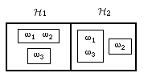

Notes to Common Knowledge
1. Thanks to Scott Boorman, Johan van Benthem, and Brian Skyrms, who called our attention on Friedell’s work.
2. Thanks to Alan Hájek for this example, the only example in this section which does not appear elsewhere in the literature.
3. The version of the story Littlewood analyzes involves a group of cannibals, some of whom are marrried to unfaithful wives, and a missionary who visits the group and makes a public announcement of the fact.
4. Robert Vanderschraaf reminded me in conversation that a crucial assumption in this problem is that the cook is telling the diners the truth, that is, the cook’s announcement generates common knowledge and not merely common belief that there is at least one messy individual. For if the agents believe the cook’s announcements even if the cook does not reliably tell the truth, then should the cook mischeviously announce that there is at least one messy individual when in fact all are clean, all will wipe their faces at once.
5. The mutual knowledge characterized by (i), (ii), and (iii) is sufficient both to account for the agents’ following the \(D^1,D^2\)-outcome, and for their being able to predict each others’ moves. However, weaker knowledge assumptions imply that the agents will play \(D^1,D^2\), even if they might not both be able to predict this outcome before the start of play. As Fiona’s quoted argument implies, if both are rational, both know the game, and Fiona knows that Alan is rational and knows the game, then the \(D^1,D^2\)-outcome is the result, even if Alan does not know that Fiona is rational or knows the game
6. Hume’s analysis of the Farmer’s Dilemma is perhaps the earliest example of a backwards induction argument applied to a sequential decision problem. See Skyrms (1998) and Vanderschraaf (1996) for more extended discussions of this argument.
7. See §3 for a formal definition of the Nash equilibrium concept.
8. Aumann (1976) himself gives a set-theoretic account of common knowledge, which has been generalized in several articles in the literature, including Monderer and Samet (1988) and Binmore and Brandenburger (1989). Vanderschraaf (1997) gives the set-theoretic formulation of Lewis’ account of common knowledge reviewed in this paper.
9. This result appears in several articles in the literature, including Monderer and Samet’s and Binmore and Brandenburger’s articles on common knowledge.
10. K3 abuses notation slightly, with ‘\(\mathbf{K}_i\mathbf{K}_j(A)\)’ for ‘\(\mathbf{K}_i (\mathbf{K}_j(A))\)’.
11. A partition of a set \(\Omega\) is a collection of sets \(\mathcal{H} = \{H_1, H_2 , \ldots \}\) such that \(H_i\cap H_j = \varnothing\) for \(i\ne j,\) and \(\bigcup_i H_i = \Omega\).
12. As a consequence of Proposition 2.2, the agents’ private information systems determine an a priori structure of propositions over the space of possible worlds regarding what they can know, including what mutual and common knowledge they potentially have. The world \(\omega \in \Omega\) which obtains determines a posteriori what individual, mutual and common knowledge agents in fact have. Hence, one can read \(\omega \in \mathbf{K}_i (A)\) as ‘\(i\) knows \(A\) at (possible world) \(\omega\)’, \(\omega \in \mathbf{K}^m_N(A)\) as ‘\(A\) is \(m\)th level mutual knowledge for the agents of \(N\) at \(\omega\)’, and so on. If \(\omega\) obtains, then one can conclude that \(i\) does know \(A\), that \(A\) is \(m\)th level mutual knowledge, and so on.
13. Thanks to Chris Miller and Jarah Evslin for suggesting the term ‘symmetric reasoner’ to decribe the parity of reasoning powers that Lewis relies upon in his treatment of common knowledge. Lewis does not explicitly include the notion of \(A'\)-symmetric reasoning into his definition of common knowledge, but he makes use of the notion implicitly in his argument for how his definition of common knowledge generates the mutual knowledge hierarchy.
14. The meet \(\mathcal{M}\) of a collection \(\mathcal{H}_i, i \in N\) of partitions is the finest common coarsening of the partitions. More specifically, for any \(\omega \in \Omega\), if \(\mathcal{M}(\omega)\) is the element of \(\mathcal{M}\) containing \(\omega\), then
- \(\mathcal{H}_i (\omega) \subseteq \mathcal{M}(\omega)\) for all \(i \in N\), and
- For any other \(\mathcal{M}'\) satisfying (i), \(\mathcal{M}(\omega) \subseteq \mathcal{M}'(\omega)\).
15. \(B^c\) denotes the complement of \(B\), that is \(B^c = \omega - B = \{\omega \in \Omega :\omega \not\in \Omega\}\). \(B^c\) can be read “not-\(B\)”.
16. Gilbert does not elaborate further on what counts as epistemic normality.
17. Gilbert (1989, p. 193) also maintains that her account of common knowledge has the advantage of not requiring that the agents reason through an infinite hierarchy of propositions. On her account, the agents’ smooth-reasoner counterparts do all the necessary reasoning for them. However, Gilbert fails to note that Aumann’s and Lewis’ accounts of common knowledge also have this advantage.
18. Suppose the following all hold:
\[\begin{align} \Omega &= \{\omega_1, \omega_2, \omega_3, \omega_4\}, \\ \mathcal{H}_1 &= \{\{\omega_1,\omega_2\}, \{\omega_3,\omega_4\}\} \\ \mathcal{H}_2 &= \{\{\omega_1,\omega_2,\omega_3\}, \{\omega_4\}\} \\ \mu(\omega_i) &= 1/4 \end{align}\]Then if \(E = \{\omega_1,\omega_4\}\), then at \(\omega_1\), we have:
\[\begin{align} q_1 (E) &= \mu(E \mid \{\omega_1,\omega_2\}) = 1/2, \text{ and} \\ q_2 (E) &= \mu(E \mid \{\omega_1,\omega_2,\omega_3\}) = 1/3 \end{align}\]Moreover, at \(\omega = \omega_1\), Agent 1 knows that \(\mathcal{H}_2 (\omega) = \{\omega_1,\omega_2,\omega_3\}\), so she knows that \(q_2 (E) = 1/3\). Agent 2 knows at \(\omega_1\) that either \(\mathcal{H}_1 (\omega) = \{\omega_1,\omega_2\}\) or \(\mathcal{H}_1 (\omega) = \{\omega_3,\omega_4\}\), so either way he knows that \(q_1 (E) = 1/2\). Hence the agents’ posteriors are mutually known, and yet they are unequal. The reason for this is that the posteriors are not common knowledge. For Agent 2 does not know what Agent 1 thinks \(q_2 (E)\) is, since if \(\omega = \omega_3\), which is consistent with what Agent 2 knows, then Agent 1 will believe that \(q_2 (E) = 1/3\) with probability 1/2 (if \(\omega = \omega_3)\) and \(q_2 (E) = 1\) with probability 1/2 (if \(\omega = \omega_4)\).
19. Harsanyi (1968) is the most famous defender of the CPA. Indeed, Aumann (1974, 1987) calls the CPA the Harsanyi Doctrine in Harsanyi’s honor.
20. Alan Hájek first pointed this out to the first author in conversation.
21. An agent’s pure strategies in a noncooperative game are simply the alternative acts the agent might choose as defined by the game. A mixed strategy \(\sigma_k (\cdot)\) is a probability distribution defined over \(k\)’s pure strategies by some random experiment such as the toss of a coin or the spin of a roulette wheel. \(k\) plays each pure strategy \(s_{k j}\) with probability \(\sigma_k (s_{k j})\) according to the outcome of the experiment, which is assumed to be probabilistically independent of the others’ experiments. A strategy is completely mixed when each pure strategy has a positive probability of being the one selected by the mixing device.
22. Lewis (1969), p. 76. Lewis gives a further definition of agents following a convention to a certain degree if only a certain percentage of the agents actually conform to the coordination equilibrium corresponding to the convention. See Lewis (1969, pp. 78–89).
23. To show that the containment can be proper and hence that rationalizability is a nontrivial notion, consider the 2-agent game with payoff structure defined by Figure 3.2a:
| Joanna | ||||
|---|---|---|---|---|
| \(s_1\) | \(s_2\) | \(s_3\) | ||
| Lizzi | \(s_1\) | (4,3) | (1,2) | (3,4) |
| \(s_2\) | (1,1) | (0,5) | (1,1) | |
| \(s_3\) | (3,4) | (1,3) | (4,3) | |
Figure 3.2a
In this game, \(s_1\) and \(s_3\) strictly dominate \(s_2\) for Lizzi, so Lizzi cannot play \(s_2\) on pain of violating Bayesian rationality. Joanna knows this, so Joanna knows that the only pure strategy profiles which are possible outcomes of the game will be among the six profiles in which Lizzi does not choose \(s_2\). In effect, the \(3 \times 3\) game is reduced to the \(2 \times 3\) game defined by Figure 3.2b:
| Joanna | ||||
|---|---|---|---|---|
| \(s_1\) | \(s_2\) | \(s_3\) | ||
| Lizzi | \(s_1\) | (4,3) | (1,2) | (3,4) |
| \(s_3\) | (3,4) | (1,3) | (4,3) | |
Figure 3.2b
In this reduced game, \(s_2\) is strictly dominated for Joanna by \(s_1\), and so Joanna will rule out playing \(s_2\). Lizzi knows this, and so she rules out strategy combinations in which Joanna plays \(s_2\). The rationalizable strategy profiles are the four profiles that remain after deleting all of the strategy combinations in which either Lizzi or Joanna play \(s_2\). In effect, common knowledge of Bayesian rationality reduces the \(3 \times 3\) game of Figure 3.2a to the \(2 \times 2\) game defined by Figure 3.2c:
| Joanna | |||
|---|---|---|---|
| \(s_1\) | \(s_3\) | ||
| Lizzi | \(s_1\) | (4,3) | (3,4) |
| \(s_3\) | (3,4) | (4,3) | |
Figure 3.2c
since Lizzi and Joanna both know that the only possible outcomes of the game are \((s_1, s_1), (s_1, s_3), (s_3, s_1)\), and \((s_3, s_3)\).
24. In their original papers, Bernheim (1984) and Pearce (1984) included in their definitions of rationalizability the requirement that the agents’ probability distributions over their opponents satisy probabilistic independence, that is, for each agent \(k\) and for each
\[ \mathbf{s}_{-k} = (s_{1j_1}, \ldots ,s_{k-1j_{k-1}}, s_{k+1j_{k+1}}, \ldots ,s_{nj_{ n} }) \in S_{-k} \]\(k\)’s joint probability must equal the product of k’s marginal probabilities, that is,
\[ \mu_k (\mathbf{s}_{-k}) = \mu_k (s_{1j_1}) \cdots \mu_k (s_{k-1j_{k-1}}) \cdot \mu_k (s_{k+1j_{k+1}}) \cdots \mu_k (s_{nj_{ n} }) \]Brandenburger and Dekel (1987), Skyrms (1990), and Vanderschraaf (1995) all argue that the probabilistic independence requirement is not well-motivated, and do not include this requirement in their presentations of rationalizability. Bernheim (1984) calls a Bayes concordant system of beliefs a “consistent” system of beliefs. Since the term “consistent beliefs” is used in this paper to describe probability distributions that agree with respect to a mutual opponent’s strategies, I use the term “Bayes concordant system of beliefs” rather than Bernheim’s “consistent system of beliefs”.
25. A mixed strategy is a propbability distribution \(\sigma_k (\cdot)\) defined over \(k\)’s pure strategies by some random experiment such as the toss of a coin or the spin of a roulette wheel. \(k\) plays each pure strategy s\(_{kj}\) with probability \(\sigma_k\)(s\(_{kj}\)) according to the outcome of the experimentm which is assumed to be probabilistically independent of the others’ experiments. A strategy is completely mixed when each pure strategy has a positive probability of being the one selected by the mixing device.
Nash (1950, 1951) originally developed the Nash equilibrium concept in terms of mixed strategies. In subsequent years, game theorists have realized that the Nash and more general correlated equilibrium concepts can be defined entirely in terms of agents’ beliefs, without recourse to mixed strategies. See Aumann (1987), Brandenburger and Dekel (1988), and Skyrms (1991) for an extended discussion of equilibrium-in-beliefs.
26. Ron’s private recommendations in effect partition \(\Omega\) as follows:
\[\begin{align} \mathcal{H}_1 &= \{ \{\omega_1,\omega_2\}, \{\omega_3\} \}, \text{ and} \\ \mathcal{H}_2 &= \{ \{\omega_1,\omega_3\}, \{\omega_2\} \}. \end{align}\]These partitions are diagrammed below:

Partition diagram for \(\mathcal{H}_1\) and \(\mathcal{H}_2\)
Given their private information, at each possible world \(\omega\) to which an agent \(i\) assigns positive probability, following \(f\) maximizes \(i\)’s expected utility. For instance, at \(\omega = \omega_2\),
\[\begin{align} E(u_1 (A_1) \mid \mathcal{H}_1)(\omega_2) &= \tfrac{1}{2} \cdot 3 + \tfrac{1}{2} \cdot 2 &\\ &= \qquad \tfrac{5}{2} &\\ &\gt \qquad 2 &&= \tfrac{1}{2}\cdot 4 + \tfrac{1}{2}\cdot 0 \\ & &&= E(u_1 (A_2) \mid \mathcal{H}_1)(\omega_2) \end{align}\]and
\[\begin{align} E(u_2 (A_2) \mid \mathcal{H}_2)(\omega_2) &= \quad 4 &\\ &\gt \quad 3 &&= E(u_2 (A_1) \mid \mathcal{H}_1)(\omega_2) \end{align}\]27. An outcome \(\mathbf{s}_1\) of a game Pareto-dominates an outcome \(\mathbf{s}_2\) if, and only if,
- \(E(u_k (\mathbf{s}_1)) \ge E(u_k (\mathbf{s}_2))\) for all \(k \in N\).
- \(\mathbf{s}_1\) strictly dominates \(\mathbf{s}_2\) if the inequalities of (i) are all srict.
28. While both the endogenous and the Aumann correlated equilibrium concepts generalize the Nash equilibrium, neither correlated equilibrium concept contains the other. See Chapter 2 of Vanderschraaf (1995) for examples which show this.
29. Aumann (1987) notes that it is possible to extend the definitions of Aumann correlated equilibrium and \(\mathcal{H}_i\)-measurability to allow for cases in which \(\Omega\) is infinite and the \(\mathcal{H}_i\)’s are not necessarily partitions. However, he argues that there is nothing to be gained conceptually by doing so.
30. In general, the method of backwards induction is undefined for games of imperfect information, although backwards induction reasoning can be applied to a limited extent in such games.
31. By the elementary properties of the knowledge operator, we have that \(\mathbf{K}_2\mathbf{K}_1\mathbf{K}_2 (\Gamma) \subseteq \mathbf{K}_2\mathbf{K}_1 (\Gamma)\) and \(\mathbf{K}_1\mathbf{K}_2\mathbf{K}_1\mathbf{K}_2 (\Gamma) \subseteq \mathbf{K}_1\mathbf{K}_2\mathbf{K}_1 (\Gamma)\), so we needn’t explicitly state that at \(I^{22},\) \(\mathbf{K}_2\mathbf{K}_1 (\Gamma)\) and at \(I^{11},\) \(\mathbf{K}_1\mathbf{K}_2\mathbf{K}_1 (\Gamma)\). By the same elementary properties, the knowledge assumptions at the latter two information sets imply that Fiona and Alan have third-order mutual knowledge of the game and second-order mutual knowledge of rationality. For instance, since \(\mathbf{K}_2\mathbf{K}_1 (\Gamma)\) is given at \(I^{22}\), we have that \(\mathbf{K}_2\mathbf{K}_1\mathbf{K}_1 (\Gamma)\) because \(\mathbf{K}_1 (\Gamma) \subseteq \mathbf{K}_1\mathbf{K}_1 (\Gamma)\) and so \(\mathbf{K}_2\mathbf{K}_1 (\Gamma) \subseteq \mathbf{K}_2\mathbf{K}_1\mathbf{K}_1 (\Gamma)\). The other statements which characterize third order mutual knowledge of the game and second order mutual knowledge of rationality are similarly derived.
32. The version of the example Rubinstein presents is more general than the version presented here. Rubinstein notes that this game is closely related to the coordinated attack problem analyzed in Halpern (1986).
33. In the terminology of decision theory, \(A\) is each agents’ maximin strategy.
34. This could be achieved if the e-mail systems were constructed so that each \(n\)th confirmation is sent \(2^{-n}\) seconds after receipt of the \(n\)th message.
35. A blockchain is a distributed ledger constituted by a sequence of blocks of data. The way proof-of-work blockchains are constructed is compatible with different agents holding different versions of the ledger. Moreover, the set of agents (i.e. nodes of the blockchain) changes over time. Some agents are possibly dishonest, because of faultiness or because of maliciousness. Finally, the system is asynchronous (delivery time is bounded but uncertain.) Yet a proof-of-work blockchain allows agents (nodes in the network) to reach a consensus about the distributed ledger. Halpern and Pass (2017) offer a knowledge-based analysis of the blockchain desirable properties that make it possible to reach a distributed consensus. The first property is T-consistency: A blockchain protocol is said to be T-consistent when, except for the last \(T\) transactions, all honest agents agree on the initial part of the ledger up to \(T\). T-consistency is not strong enough to make the blockchain a useful ledger for transactions, as nothing prevents a transaction \(x\) to be in \(T\) for agent \(i\) and yet never appear on agent \(j\)’s ledger, because \(j\)’s ledger never grows to include the block in which \(x\) is to be recorded.
To avoid this, we need a second property, said \(\Delta\)-growth, stating that if \(i\) is honest and her ledger at time \(t\) has length \(N\), then all honest agents at time \(i + \Delta\) will have ledgers of length \(N\). A blockchain protocol that satisfies \(T\)-consistency and \(\Delta\)-growth guarantees that, within time \(\Delta\) and from that point in time onwards, all honest agents will know that within time \(\Delta\) and from that point in time onwards, all honest agents will know that… etc. This is called \(\Delta\text{-}\Box\)-common knowledge. There are two more factors to take into consideration: one is that the set of agents (nodes in the blockchain) is not constant. The result is shown to hold in that the “all honest agents” above should read as “all honest agents present in the blockchain at that particular point in time.” The way the result is preserved is by introducing indexical formulas and specifying semantical clauses indexed by specific agents. The second element is that, in actual blockchains, neither \(T\)-consistency nor \(\Delta\)-growth are guaranteed to hold but with high probability, thus the group attitude emerging from the blockchain is \(\Delta\text{-}\Box\)-common knowledge, stating that within time \(\Delta\) and from that point in time onwards, all honest agents will know with probability \(p\) that within time \(\Delta\) and from that point in time onwards, all honest agents will know probability \(p\) that… etc.
Notes to Rubinstein’s Proof
1. If this does not look immediately obvious, consider that either
\(E = [T_2 = t] =\) my (Lizzi’s) \(t\)th confirmation was lost,
or
\(F = [T_2 = t] =\) my \(t\)th confirmation was received and Joanna’s \(t\)th confirmation was lost
must occur, and that \(\mu_1 (T_1 = t \mid E) = \mu_1 (T_1 = t \mid F) = 1\) because Lizzi can see her own computer screen, so we can apply Bayes’ Theorem as follows:
\[\begin{align} \mu_1 (E \mid T_1 = t) &= \frac{\mu_1 (T_1 = t \mid E) \mu_1 (E)}{\mu_1 (T_1 = t \mid E) \mu_1 (E) + \mu_1 (T_1 = t \mid F) \mu_1 (F)} \\ &= \frac{\mu_1 (E)}{\mu_1 (E) + \mu_1 (F)} \\ &= \frac{\varepsilon}{\varepsilon + (1-\varepsilon)\varepsilon} \end{align}\]